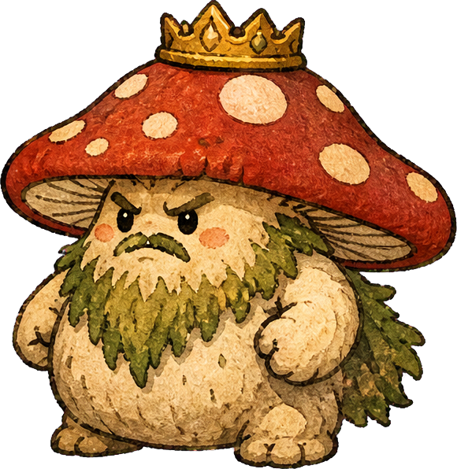

YOYO’S LITTLE ADVENTURES
又又的森林大冒险❧
每天从家出发，发现不一样的世界。第一本冒险日记 ／ V1.0

小小冒险家 · 又又
♥ ♥ ♥ ♥ ♥
 0/ 1200
0/ 1200今日的小心愿收集 12 块木头，发现森林里的秘密。
01 温暖的家
给又又的第一封冒险邀请阳光正好，
阳光正好，
去森林走走吧！
背上小包，收集散落的木头。
听说林子深处，住着一群调皮的蘑菇……
收集木块 认识蘑菇怪
走慢一点也没关系，家一直在这里。冒险完成
DAY 01 · 我的第一篇日记今天，也满载而归！
阳光穿过树叶，我走到了森林深处。
原来勇敢，就是再往前走一小步。
12 块木头
蘑菇勋章正在翻开森林绘本· · ·
温暖的家阳光林道林间工作台蘑菇空地森林的秘密
AD或←→ 移动空格 跳跃J 采集 / 攻击鼠标左键也能攻击E 互动12 换工具
冒险进度自动保存